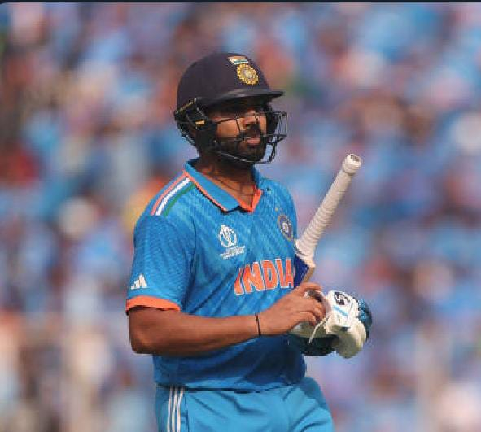
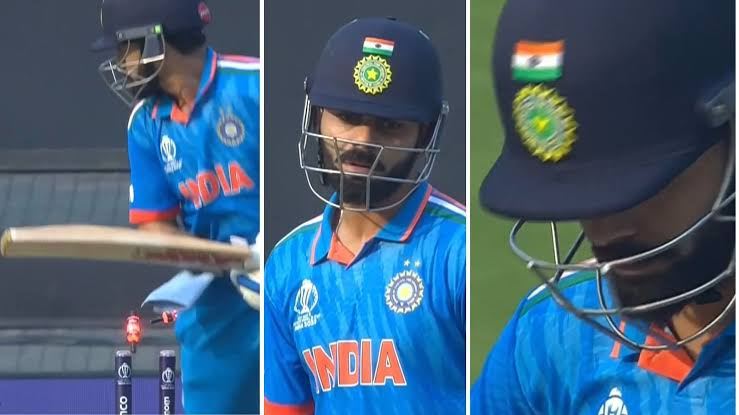

Five time Champions Australia made it to sixth time by clinching yet another World Cup trophy after 2015.
They upsets the host nation India with 6 wicket win. Australia's bowlers put the chokehold to restrict India to 240,
The chase was not without stutters early on, as Australia slipped to 47/3, it was Travis Head who delivered the final
slam with his rollicking 120-ball 137.
After 10 consecutive wins to reach the final, India were outplayed by Australia on a slow Ahmedabad pitch.
The pitch in Ahmedabad, slower and drier than expected, played a crucial role. India's strategy didn't adapt well,
especially in the second innings when the pitch conditions changed, failing to leverage the slower nature in their favour.
Venue: Narendra Modi Stadium, Ahmedabad


Indian Skipper Rohit Sharma, who was in God Mode in this WC campaign had a delivered a good start for India with 47 in 31 balls.
But Gill went too early and the start from Indian Skipper he too dismmissed without converting his score to a big one.
Iyer went too early, at a sudden it became quiet opposite to India
Kohli (54) and Rahul (66) both looked good in their innings, but after the dismissal of Kohli.
Indian score went too slow due to the pitch condition
and also aussie fielders done a great job and their bowlers didn't given a chance to Inidan batters.
The plans and tactics of Aus team had succeed and restricted India to 240.
India believed it was a fighting total to defend and came with the cofidence to the field.
India had a required wonderful start despite a miss chance of warner's wicket in very first ball of the 2nd innings and giving 16 runs in 1st over.
Super-Man Shami produced a wicket of warner in 2nd over and bumrah got the wickets of Marsh and Smith in Consecutive overs and AUS were 47-3.
As pitch became advantage and required run rate was low, Aus opener Head (137) with Labuschagne (58*) build a mamooth partnership stood till the end and made it for Australia.
The innings of Travis Head was incredible as he delivered on the Finale of WC and that to against No.1 bowling line up in this tournament.